HÉV, laptop, Athina lába
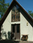
Székes egy ház. Az ajtót kinyitni veszélyes lehet.
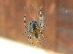
Menet közben találkoztunk ezzel a pókkal
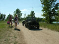
Ez a Willis Jeep volt az elsõ jele annak, hogy jó irányba tartunk. Hamarosan német vezényszavakat hallottunk a távolból. Épp a bemutató kezdetére érkeztünk oda.
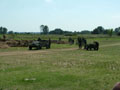
A helyszínen egy magyar reteszállás volt látható, amely mellett egy raj honvéd éppen gyakorlatozott. Épp ekkor érkezett oda egy német SS tábori csendõrosztag, és ellenõrzõ-irányító pontot állítottak fel a visszavonuló német és szövetséges egységek fogadására.
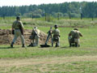
A magyar katonák elõször egy 8 cm-es aknavetõvel gyakorlatoztak. Lõttek vele többet is, gyakorlógránáttal.
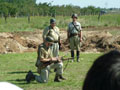
Ezután puskalövészet következett...
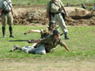
... majd kézigránát-hajítás.
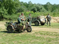
A tábori csendõrök közben várták, hogy a közelben zajló harcokból visszavonuló alegységek vagy egységrészek tévedjenek arra
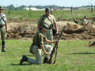
A magyar katonák puskagránáttal is lõttek
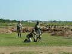
"Ott van! Aggyad neki!"
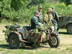
A németek meg csak ültek és vártak...
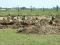
A lövészárokban egyelõre béke honolt
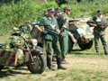
"Aha! Jönnek a cigányok!" - gondolta a náci, mert rasszista volt.
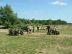
- Guten Tag, sind Sie Zigeuner?
- Nein, ich bin ein SS Soldat.
- Scheisse!
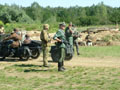
"Na, ezek itt biztos cigányok!"
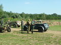
- Jó estét. Van Önök között cigány?
- Hülye vagy?
- Igen. Hiszen minden náci elmebeteg.
- Ja, tényleg. Elnézést.
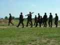
Végül elegánsan bemasírozott egy raj SS páncélgránátos, "békalencsés" álcázó öltözékben, a legkülönfélébb fegyvereket cipelve
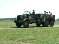
õket egy magyar Botond gépkocsi követte, fedélzetén néhány magyar katonával
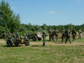
A csendõrök bezavarták õket a lövészárokba, erõsítsék az állást, ugyanis rövidesen orosz támadást vártak
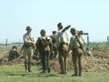
A magyar katonák a magyar szakaszparancsnoknál jelentkeztek
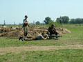
Ha már gyakorlatoztak, bevonták õket is. Az elsõ világháborúból megmaradt, bár azóta kissé modernizált Schwarzlose géppuskával hosszú sorozatokat lõttek.
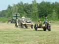
Ám hirtelen egy Kübelwagen és egy oldalkocsis Zündapp tûnt fel. Egy német tábornok érkezett megtekinteni az állást.
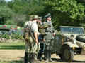
A német csendõrök megmutatták neki, merre van az út bal oldala
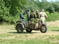
Meg is találta
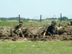
A katonáknak nem csak az egyenruháik és fegyvereik voltak korhûek, hanem életszerûen imitálták azt a felhõtlen örömöt is, amit egy fontoskodó tábornok tud okozni egy frontkatonának

A tábornok kitüntetett két német és egy magyar katonát
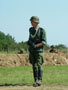
A tábori csendõr csendesen figyelt

A nagy ellenõrzés és tábornokozás közepette senki sem vette észre az állást lopakodva megközelítõ szovjet felderítõ járõrt!
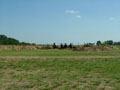
Addig álltak vigyázzban, míg az oroszok rá nem lõttek a tábornokra
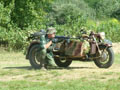
A tüzet viszonozták, miközben egy felcser bekötözte a tábornok sebesült fejét

Majd a csicskások villámgyorsan kimenekítették a veszélyes övezetbõl
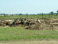
A felderítõ járõr a tûzerõt látva visszavonult. A németek és a magyarok beszüntették a tüzelést.
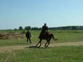 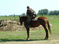
Rövidesen lovas jelentõ érkezett, s jelentette, hogy a szomszédos falut elfoglalták az oroszok
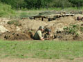
Ennek persze senki sem örült. A képen a magyar törzsõrmester kezében egy fegyverritkaság, egy magyar gyártmányú Király géppisztoly látható.
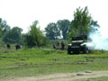
A szovjetek rövidesen erõszakos felderítéssel próbálkoztak, de féllánctalapas GMC teherautójukat felgyújtotta a német-magyar állás mögött álcázott 5.5 cm-es Panzerabwehrkanone lövése
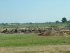 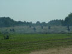
Heves tûzharc bontakozott ki, de egyik oldal sem ért el eredményt, csak ímmel-ámmal próbálták lefogni a másikat
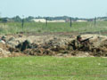
Az SS katonák a legmodernebb fegyverekkel harcoltak, csak a Sturmgewehr hiányzott a gyûjteménybõl
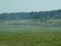
Egy orosz katona megpróbált a német-magyar állás hátába kerülni
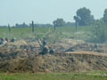
De nem sikerült neki
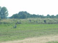
Az oroszok rövidesen visszavonultak és tüzérségi támogatást kértek
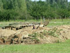
Aknatûzre számítva a katonák lefeküdtek a lövészárok mélyére. Ez a német mesterlövész azért még kukucskált egy kicsit, hátha lõhet valamit vacsorára.
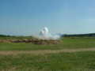 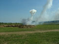
Jött is az aknatûz rövidesen, csak úgy rengett a föld!
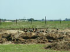
Szerencsére az oroszok ma elég bénán céloztak, így a tûzcsapás a peremvonal elé érkezett
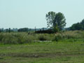
Az oroszok ismét egy felderítõ járõrt küldtek ki, az aknatûz hatását ellenõrizendõ
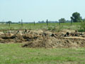
A túloldalról hamar meggyõzték õket, hogy köszönik, jól vannak
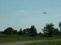 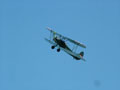 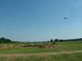
Mivel a károkat a gyalogság nem tudta felmérni, rövidesen egy Po-2 repülõgép érkezett, hogy légi felderítést és zavaróbombázást végezzen
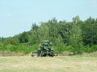
A közelben álló német légvédelmi üteg tüzet nyitott
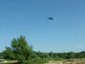
A gép motorja akadozni kezdett, és billegve a közeli erdõ felé siklott. A lövészárokból harsány éljenzés hallatszott.

De hamarosan jött az újabb, sokkal hevesebb tüzérségi csapás
BAMM!
BUMM!
KABUMM!
BAFF!
BANG!
Egy irányzó füstgránát is földet ért. Az oroszok közben erõsítést kaptak egy gárda-harckocsizó egységtõl, két T-34-est. A füst a harckocsik célhoz irányítására szolgált.
Jöttek is!
A két T-34-es a kísérõ gyalogsággal rohamra indult
Az egyik rövidesen ráfutott a német utászok által korábban telepített aknára és harcképtelenné vált
A másik megpróbálta legázolni a német-magyar állást...
... de egy magyar törzsõrmester egy páncélrém-lövéssel azt is harcképtelenné tette
A gyalogság a súlyos veszteség ellenére folytatta a rohamot
Közelharc alakult ki az állásban. A tábori csendõrök és az 5.5-ös PaK személyzete távolabbról nyitott tüzet a támadókra
Ez az MG42-es géppuska döntötte el az ütközetet
Az oroszok számos halottat és egy foglyot hátrahagyva visszavonultak és feladták a támadást
Ezzel véget ért a csata. Az egyenruhások elvonultak, helyüket a pirotechnikusok vették át, akik mentesítették a területet az esetleg fel nem robbant töltetektõl
Felkeltek a halottak
Kiszálltak a harckocsizók is, akik nem egészen korhû módon AK-47-est viseltek. Egyikük nagy boldogan mindjárt tele is lõtte az eget vaktölténnyel.
Véget ért a móka mára, vissza a puskát a raktárba...
A tûzoltók eloltották a susnyást
De még nem volt vége! A Magyar Honvédség T-72-ese is bemutatóra készült.
Közben két amerikai katona, egy gyalogsági fõhadnagy és egy ejtõernyõs közlegény barátkozott a tömeggel
Arra jött a Panzerschreck-kezelõ katona, és megcsodálhattuk fegyverét
"Ekkora tankot lõttem!"
"Csak már nem emlékszem, hol."
A Panzerschreck elsütõszerkezete. A hátul behelyezett rakétagránát ezzel a piezoelektromos gyújtóval érintkezik, ez indítja be.
A fa mögött kitûnõen álcázott 5.5-ös PaK-ot tényleg csak hátulról lehetett látni
Német aknavetõ tüzelõállásban. A kép szélén látható zöld láda egy gyakorló Panzerfaustot rejtett, melyet egy kedves hagyományõrzõ jóvoltából meg is tekinthettünk. Köszönjük.
A tûzoltók befejezték végre a szerencsétlenkedést, és elindult a T-72-es

Elsõként be akarták mutatni, hogyan ássa be magát a harckocsi. Ez olyan jól sikerült, hogy eltartott egy darabig, amíg kiásták.
A közönség érdeklõdve figyelt
Na, de végre elõmászott a T-72-es, és eszeveszett száguldozásba kezdett, állandóan célra tartott lövegcsõvel, hadd lássák, hogy van benne giroszkóp

Körberongyolt az állás körül, és valóban megdöbbentõ volt látni, hogy még ez a hetvenes években készült, nem különösebben kimagasló harckocsi is mennyivel mozgékonyabb, veszedelmesebb, mint a cammogó T-34-esek
Aztán bemutatta, hogyan gázolna le egy ilyen állást
Jó ötven-hatvannal elhúzott a közönség elõtt, csak úgy rengett a föld alatta
Láthattuk mûködés közben az álcázó ködfejlesztõt is
Az egykori lövészárok a T-72-es "látogatása" után

A harckocsi bemutatója után a közönség közelrõl is megnézegethette a jármûveket, fegyvereket, tapogathatta az egyenruhásokat. Itt éppen egy ártatlan pici gyermeket fertõznek meg egy náci motorkerékpárral.
Találtunk egy puskát
Orosz katonák egy csoportja a halomba hordott ásványvizes palackokat vizsgálja. Egy amerikai tiszt próbál segíteni a rejtélyes tárgyak rendeltetésének kiderítésében.
Szovjet PTR nehézpuska
Egy Lend-Lease GMC teherautó
Veterán mentõautó is volt
GMC féllánctalpas, mellyel mi is mentünk egy kört. Megdöbbentõen simán ment, mintha nem is hepehupás terepen haladt volna!
Pillantás a mûszerfalra. Na, honnan került ide?
Sofõrünk
Két UAZ a sarokban
A magyar Botond teherautó
Szlovák hagyományõrzõké volt az oldalkocsis Zündapp és a Kübelwagen
Király géppisztoly
A nap vége: fegyvertisztítás
A rendezvényen nem voltak gagyiárusok. Csak két stand volt: az egyiken magyar és német katonadalokat lehetett vásárolni CD-n, a másikon két orosz fószer árult mindenféle szovjet és orosz relikviákat
Aztán mindenki elment sörözni. Ez ugyan gyömbérital, de nem baj, ez is jó jeges volt.